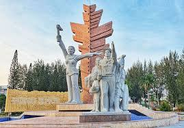
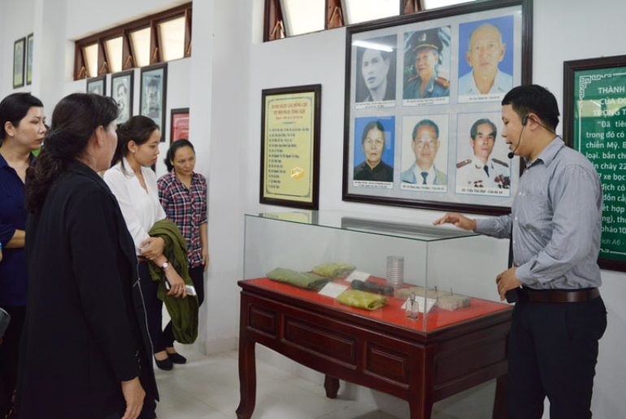
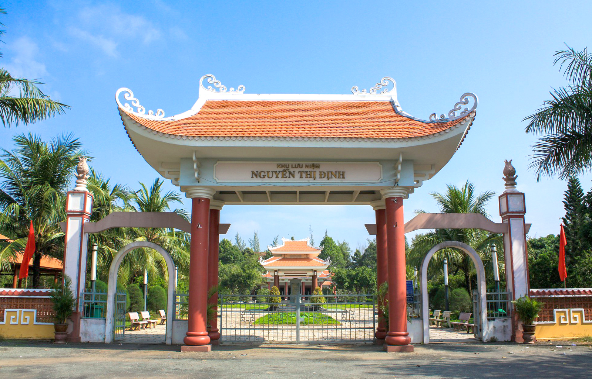
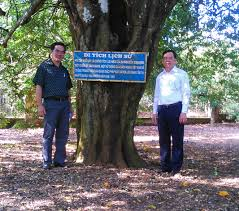

Chào mừng đến với Di Tích Đồng Khởi
Khu di tích Đồng Khởi nằm tại xã Định Thủy, huyện Mỏ Cày Nam, tỉnh Bến Tre – nơi ghi dấu sự kiện lịch sử trọng đại ngày 17 tháng 1 năm 1960: cuộc Đồng Khởi bùng nổ, mở đầu phong trào nổi dậy của nhân dân miền Nam chống lại chế độ Mỹ – Diệm.

Ý nghĩa lịch sử
Phong trào Đồng Khởi năm 1960 tại Bến Tre do bà Nguyễn Thị Định (Bà Ba Định) lãnh đạo đã trở thành ngọn lửa lan rộng khắp miền Nam Việt Nam, góp phần quan trọng vào quá trình thành lập Mặt trận Dân tộc Giải phóng miền Nam Việt Nam cuối năm 1960.
Điểm Tham Quan Nổi Bật

Tượng Đài Chiến Thắng
Biểu tượng hào hùng của phong trào Đồng Khởi, được đặt trang trọng ngay tại trung tâm khu di tích.

Nhà Trưng Bày Lịch Sử
Lưu giữ hàng trăm hiện vật, tài liệu, hình ảnh về phong trào Đồng Khởi và cuộc kháng chiến.

Nhà Lưu Niệm Bà Ba Định
Nơi tưởng nhớ nữ tướng Nguyễn Thị Định – người lãnh đạo tiêu biểu của phong trào Đồng Khởi.

Vườn Cây Lưu Niệm
Không gian xanh mát để du khách nghỉ ngơi, tìm hiểu thiên nhiên và văn hóa vùng sông nước Bến Tre.
Thông tin nổi bật
| Hạng mục | Chi tiết |
|---|---|
| Ngày diễn ra sự kiện | 17 tháng 1 năm 1960 |
| Địa điểm | Xã Định Thủy, huyện Mỏ Cày Nam, tỉnh Bến Tre |
| Người lãnh đạo tiêu biểu | Bà Nguyễn Thị Định (Bà Ba Định) |
| Xếp hạng di tích | Di tích Quốc gia đặc biệt |
| Giờ tham quan | 7:00 – 17:00 hàng ngày |